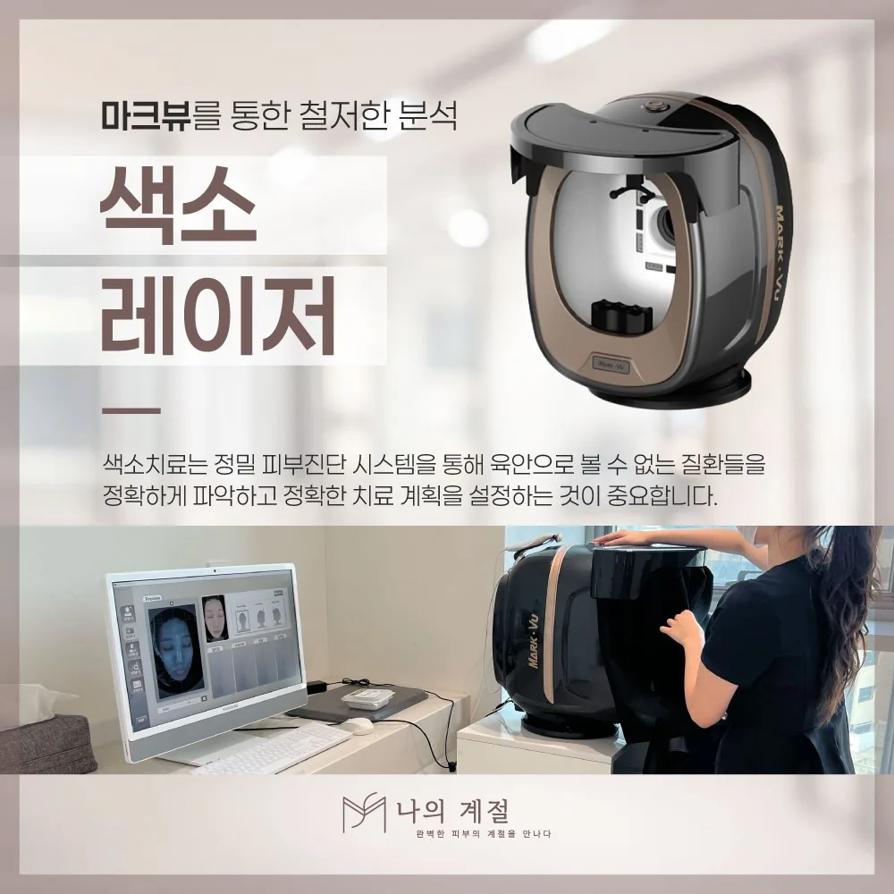

울산기미레이저, 기미와 잡티·주근깨·검버섯을 구분하는 이유

얼굴의 갈색 얼룩이 모두 같은 색소는 아닙니다. 기미·잡티·주근깨·검버섯의 차이와, 정밀 피부 진단으로 색소의 종류와 깊이를 확인한 뒤 계획을 세우는 이유를 정리했습니다.
갈색 얼룩에도 종류가 있습니다
기미는 양쪽 볼·이마·윗입술에 경계가 흐린 갈색 얼룩으로 넓게 퍼지며, 자외선·호르몬 변화·열·자극에 따라 짙어졌다 옅어지기를 반복할 수 있습니다. 주근깨는 작은 점이 흩어진 형태로 햇빛에 짙어지고, 검버섯(지루각화증)은 표면이 두꺼워지거나 올라오는 병변입니다. ‘잡티’는 이런 색소를 통칭하는 생활 용어라 그 자체로 진단명은 아닙니다.
진단이 계획을 정합니다
색소가 표면에 있는지 깊이 있는지, 여러 종류가 섞여 있는지에 따라 적합한 장비와 출력, 횟수, 바르는 약의 병행 여부가 달라집니다. 나의계절의원은 정밀 피부 진단 시스템으로 색소 상태를 촬영해 설명하는 과정을 공식 안내합니다. 촬영 전에는 진한 화장을 피하고, 최근 햇빛 노출이나 태닝 여부를 알려 주세요.
같은 장비로 모두 치료하지 않습니다
주근깨나 검버섯은 비교적 분명한 병변을 겨냥해 치료하는 경우가 많고, 기미는 자극을 줄이며 여러 번에 나누어 접근하는 방식이 널리 쓰입니다. 같은 얼굴에 서로 다른 색소가 섞여 있다면 부위별로 계획이 달라질 수 있으므로, 어떤 색소에 어떤 방법을 쓰는지 구분해 설명을 들으세요.
상담 전 확인할 내용
- 색소가 생긴 시기와 변화(계절·임신·호르몬 치료 전후)
- 짙어지는 상황(햇빛·열·마찰·스트레스)과 옅어지는 시기
- 이전 레이저·필링·미백 연고 이력과 당시 반응
위험과 주의사항
시술 후 붉어짐, 따가움, 부기, 가피(딱지), 일시적인 색소침착이 생길 수 있으며 드물게 탈색·물집·흉터가 보고됩니다. 기미는 치료 후에도 다시 짙어질 수 있어 자외선 차단과 재발 관리가 필요합니다. 통증이 심하거나 물집·진물이 생기면 병원에 연락하세요.
본 글은 상담 준비를 위한 일반 정보입니다. 국내 사용 제품·장비와 허가사항, 개인별 적용 여부와 회복은 의료진의 진료를 통해 확인하세요.
울산기미레이저 시술별 적용 여부와 주의사항 더 보기 ↗카테고리 기미·색소레이저